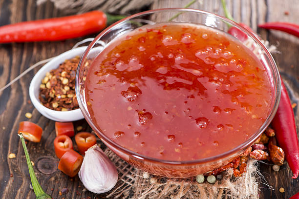
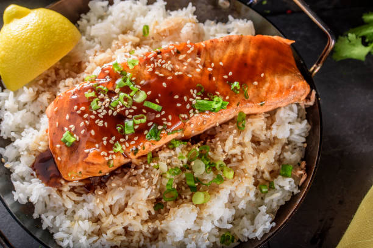
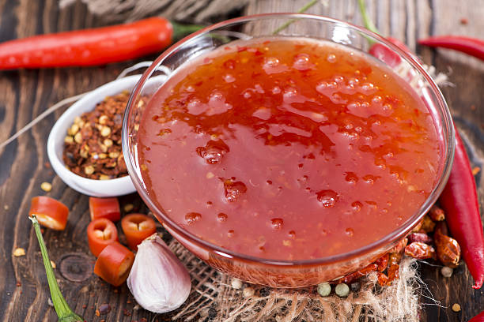
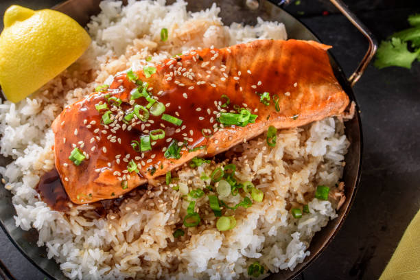

Gong Bao Ji Ding
2022-10-25
Gong Bao Ji Ding är en populär kinesisk rätt som kommer från Sichuan provinsen. I västvärlden är denna rätt mer känd som kungpao kyckling. Men detta recept är mer Sichuan autentisk.
Grekisk paj
2022-10-25
Denna vegetariska grekiska paj är perfekt både till den enkla vardagen eller som tillbehör på buffébordet! Den är enkel att göra men otroligt smakrik. Blir extra god med tsatziki till.
Fransk potatissallad
2022-10-25
Fransk potatissallad är det perfekta tillbehöret för den som önskar en lätt och fräsch sallad. Passar väldigt bra till gravad lax
Morotstårta
2022-10-25
Här finner du en otroligt härlig trelagers morotstårta! Genom att finriva morötterna och använda olja istället för smör i degen bevaras tårtans saftighet. Limeskal i frostingen gör det lilla extra för en otrolig smak!


Moules Marinieres
2022-10-25
Moules Marinieres är en klassisk rätt med blåmusslor från Frankrike. Med en perfekt smakbalans från havet, färska örter, vitt vin och grädde. Rekomenderat tillbehör är frasigt vitlöksbröd.
 



Asiatisk lax
2022-10-25
Denna maträtt är sprängdfylld av smaker från det asiatiska köket! Laxen bakas med ett täcke av sweet chili, teriyaki och olika färska kryddor och passar bra som extra sås när rätten ska serveras.
Spenat & fetaost lax
2022-10-25
Ungsbakad lax med ett täcke av spenat och fetaostkräm. En perfekt kombination av sälta och sötmna smaksätter laxen och skapar en måltid du sent kommer att glömma! Bassar bra både tillsamans med ungsrostade rotfrukter, ris eller matvete.
Avokado Eggs Benedict
2022-10-25
Här hittar du den perfekta mackan till brunchen! Vi har tagit den klassiska rätten Eggs Benedict och gjort den vegetarisk. På ett rostat surdegsbröd har vi philadelphiaost, avokado, pocherat ägg och fluffig hollandaisesås.
Älgskav
2022-10-25
Denna rätt är lätt att tillaga och kan serveras på många olika sätt. Finskivad älg tillagas med mycket rosépeppar, champinjoner, lök och grädde. Är lika god till hemlagad potatismos som i en wrap.
Avokadotoast
2022-10-25
En enkel men otroligt smakrik toast som kan självklart göras hemma i köket men tillagas bäst över en öppen eld i ett grilljärn. Denna toast innehåller allt gott man kan tänka sig och lite till, en perfekt kombination av sött, salt och hetta.